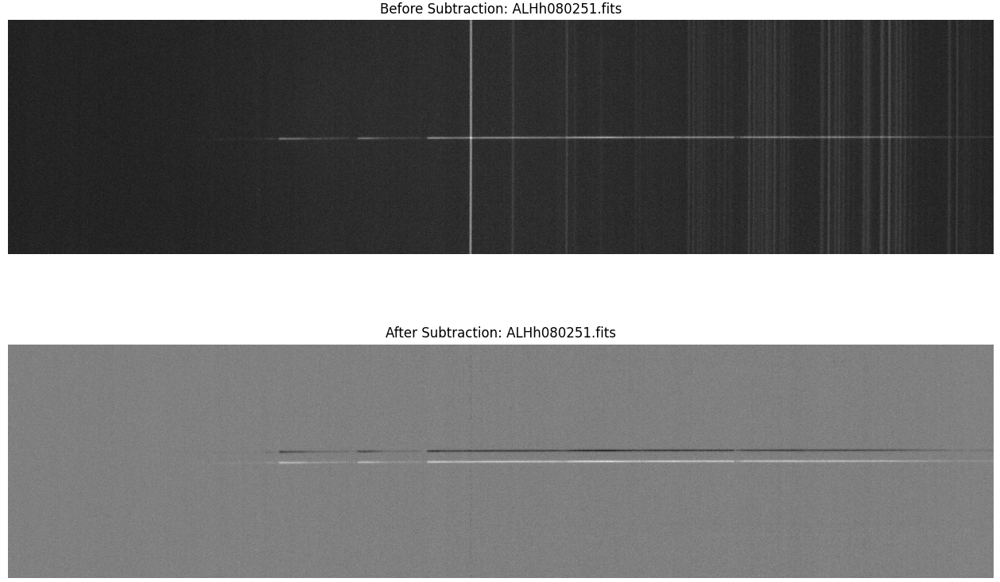
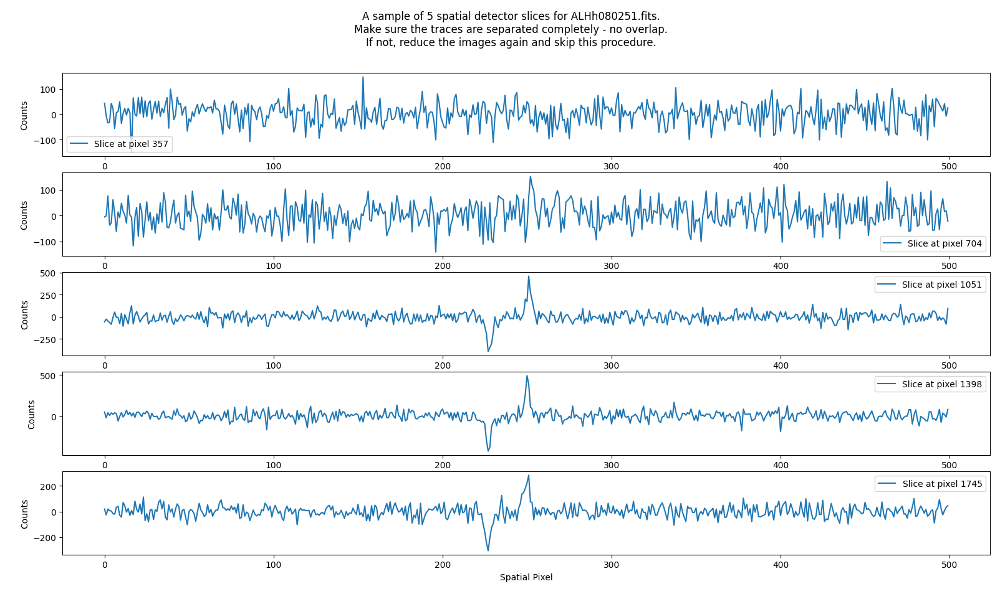
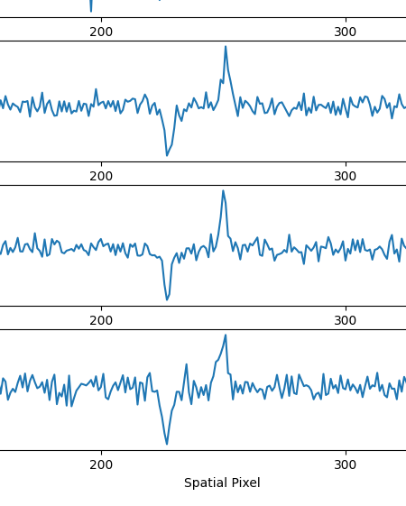
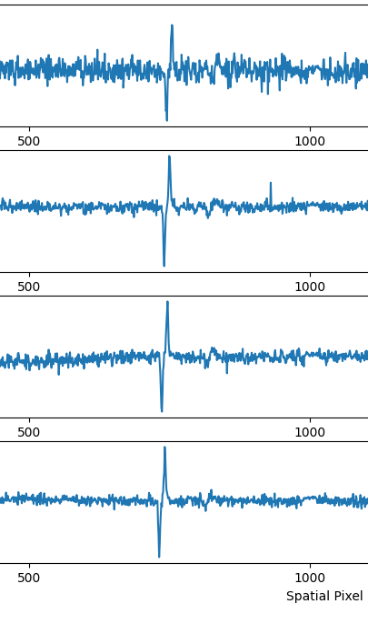

A-B Background subtraction¶
Note
This procedure can only be performed if you have several frames of the same object, taken continuously one after another, with the same exposure time, but where the objects’ spatial position is with purpose shifted slightly on the detector. Skip this procedure if you do not have such frames.
Quickstart¶
The procedure is called by the command:
pylongslit_subtract_background PATH_TO_CONFIG_FILE
The procedure will perform A-B background subtraction for the pairs of reduced files as provided in the configuration file. The procedure will alter the reduced files in-place.
Quality Assesment¶
The procedure will show the frame prior and after background subtraction. An example for the SDSS_J213510+2728 dataset is shown below:
{kind=link}
Besides a clear reduction of the sky-background, the most important thing to ensure is that the object from the B frame (the negative) is not laying too close to the object in the A frame (the positive), such so some of the A object signal is subtracted by the B object signal. The software takes a sample of 1d-slices to help investigate this:
{kind=link}
Zooming on the the negative and positive object signal, you can see that they are not overlapping:
{kind=link}
The GQ1218+0832 tutorial dataset shows an example where the traces are overlapping:
{kind=link}
Hence, you should not perform A-B subtraction on this dataset. Even though the traces seem to be just touching, the subtraction will still remove some of the object signal.
If this is the case, reset (perform the reduction procedure again) and move on to the next step without A-B subtraction.
Parameter options¶
The parameters for this procedure are providing the pairs of reduced files that should be subtracted from each other. Example from the SDSS_J213510+2728 dataset:
"background_sub" : {
"pairs": {
"1": {
"A": "ALHh080251.fits",
"B": "ALHh080252.fits"
},
"2": {
"A": "ALHh080252.fits",
"B": "ALHh080251.fits"
}
}
}
You can insert any number of pairs, as long as they are tagged with numbers (in string format) starting from 1 and increasing by 1 for each pair (1,2,3…). This helps the software to keep track of the pairs. The A and B files should be the filenames of the reduced files (their raw filenames).
For users new to data reduction - short introduction to A-B background subtraction¶
A-B background subtraction is a technique used to remove the sky-background from spectra. The idea is to take two frames of the same object, with the same exposure time, but where the object is shifted slightly on the detector. This way, the sky gets recorded in the spatial position of the object. Example: if for frame A the object is at spatial pixel 100, the object can be moved to spatial pixel 110 for the frame B, and now frame B has the sky background recorded at spatial pixel 100. Subtracting frame B from frame A will remove the sky-background from the object signal. The procedure is called A-B subtraction.
For users new to data reduction - short introduction to sky background¶
Sky background is the light from the sky and the atmosphere that is recorded by the detector together with the object spectrum. This background light covers the whole slit, and the bacground therefore shows itself as lines through the whole spatial direction (see above figures). The sky background consists both of strong sky lines (emission lines from the sky) and a continuum background. These sky lines/background are mixed into the object signal, and must be removed.